MOBILE APPLICATION SECURITY ASSESSMENT
Deliberately-Vulnerable Mobile App Exploitation
| Course | AfricaHackon Training: Mobile Application Security |
| Target app | BeetleBug v1.0 — app.beetlebug (github.com/hafiz-ng/Beetlebug) |
| APK SHA-256 | cb28dcf7217e4e6141da12de434978665478f8b219694246f5b49369d5725682 |
| Classification | CONFIDENTIAL — Educational |
| Report version | 1.0 (Final) |
| Report date | 6 October 2026 |
| Author | [Nelson Ngumo] |
| Squad | [SQUAD |
Scope & ethics. All testing targeted only the intentionally-vulnerable BeetleBug application, analysed locally. The one live network interaction was a read of BeetleBug's own publicly-exposed Firebase database (part of the challenge). No third-party or production system was tested. Submitted for academic marking.
This report documents the security assessment of the BeetleBug deliberately-vulnerable Android application and the capture of its challenge flags. BeetleBug is a CTF-style training app whose ten challenge categories each hide a flag or secret. The assessment used the OWASP Mobile Application Security Testing Guide (MASTG) methodology: static analysis of the APK and dynamic testing of its backend.
All ten challenge categories were solved and their flags/secrets recovered through reverse engineering and backend testing. The findings confirm the app trusts the client and device with secrets and sensitive data, exports components without authorisation, and fails to validate input. The table summarises the results.
| # | Challenge | OWASP Mobile Top 10 (2024) | Severity | Flag / secret recovered |
|---|---|---|---|---|
| C1 | Hardcoded Secrets | M1 Improper Credential Usage | HIGH | 7432580 / beetle1759 |
| C2 | Insecure Data Storage | M9 Insecure Data Storage | HIGH | 0x1442c04 / 0x3982c%4 |
| C3 | Sensitive Info Disclosure (logs) | M9 Insecure Data Storage | MEDIUM | 0x55541d3 |
| C4 | Vulnerable IPC Components | M8 Security Misconfiguration | HIGH | users table via exported provider |
| C5 | Vulnerable WebViews | M4 Insufficient I/O Validation | HIGH | arbitrary URL load (exported) |
| C6 | Fingerprint Auth Bypass | M3 Insecure Authentication | HIGH | UI-only gate, no CryptoObject |
| C7 | Insecure Deeplinks | M4 Insufficient I/O Validation | MEDIUM | https://beetlebug.com route |
| C8 | Firebase Misconfiguration | M8 Security Misconfiguration | CRITICAL | 0x3365A10 (live DB) |
| C9 | SQLite Injection | M4 Insufficient I/O Validation | HIGH | 0x1172c04 (' OR '1'='1) |
| C10 | Input Validation (XSS) | M4 Insufficient I/O Validation | MEDIUM | script executes in WebView |
On the evidence. Flags and secrets below were recovered by reverse-engineering the APK (jadx) and by testing the live Firebase backend (curl) — standard mobile pentest techniques. Each finding includes a capture of the real analysis output. To also register the flags on BeetleBug's in-app scoreboard, enter the recovered values in the app on an emulator/device and add that scoreboard screenshot where noted in Section 5.
| Analysis host | Linux workstation (x86-64) |
| Target | BeetleBug v1.0 release APK (beetlebug.apk, package app.beetlebug) |
| Static analysis | jadx 1.5.6 (DEX → Java), APK manifest & resource review |
| Dynamic / backend | curl (Firebase REST), documented adb commands for on-device steps |
| Supporting tools | sqlite3, grep, unzip |
| On-device run (optional) | [Genymotion / AVD / rooted phone — add if you run it for scoreboard] |
The release APK was downloaded, hashed for integrity, and decompiled to Java source for review. All secret values and vulnerable code paths below were read directly from this output.
curl -L -o beetlebug.apk https://github.com/hafiz-ng/Beetlebug/releases/download/v1.0/beetlebug.apk sha256sum beetlebug.apk # cb28dcf7...5725682 jadx -d src beetlebug.apk
AndroidManifest.xml for
exported components, permissions and deep links; grep sources and strings.xml for secrets and
flags.| OWASP | M1 Improper Credential Usage · MASVS-STORAGE |
| CWE | CWE-798 Use of Hard-coded Credentials |
| Affected | ctf.EmbeddedSecretStrings, ctf.EmbeddedSecretSourceCode |
Finding. Two challenges hide secrets in the app package. The "secret strings" PIN is
compared against string resource V98bFQrpGkDJ, whose value is 7432580. The "secret
source code" promo code is a hardcoded field, beetle1759. Both are trivially recovered by
decompiling the APK.
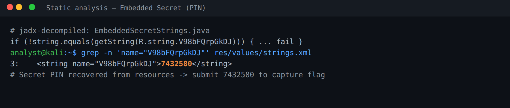
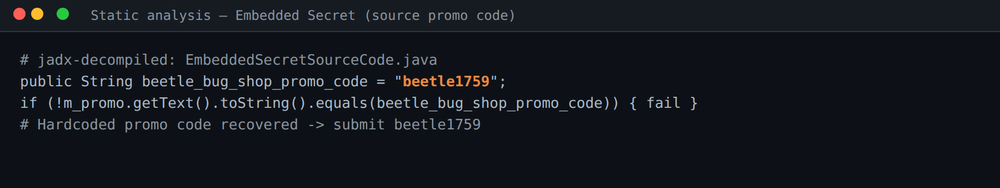
Flags captured: PIN = 7432580 Promo = beetle1759
Remediation. Never ship secrets in the APK or its resources. Hold them server-side, deliver over authenticated TLS at runtime, and use the Android Keystore for anything that must live on the device.
| OWASP | M9 Insecure Data Storage · MASVS-STORAGE-1 |
| CWE | CWE-312 Cleartext Storage of Sensitive Information |
| Affected | ctf.InsecureStorageSharedPref, ctf.InsecureStorageExternal |
Finding. The app writes credentials and the flag in cleartext. SharedPreferences stores
username, password and "flag 3" = 0x1442c04; a second challenge writes
flag : 0x3982c%4 to a world-readable file on external storage. On a rooted device these are
readable under /data/data/app.beetlebug/shared_prefs/ and the external path respectively.
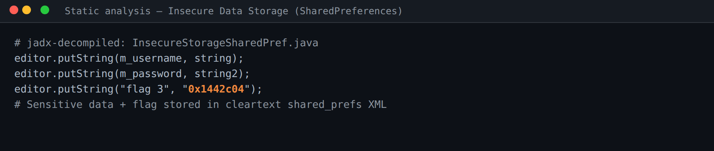
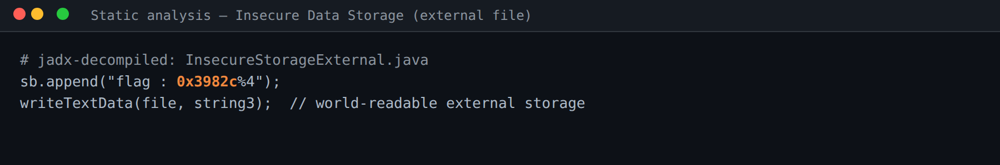
Flags captured: 0x1442c04 0x3982c%4
Remediation. Encrypt on-device data (EncryptedSharedPreferences / SQLCipher) with Keystore-backed keys; never place sensitive data on external storage; store only what is necessary.
| OWASP | M9 Insecure Data Storage · MASVS-STORAGE-2 |
| CWE | CWE-532 Insertion of Sensitive Information into Log File |
| Affected | ctf.InsecureLoggingActivity |
Finding. On a failed transaction the app logs the submitted card number and the flag to
Logcat under tag beetle-log. The flag is string resource _0x532123 = 0x55541d3.
Any app with log access, or an analyst running adb logcat, reads it.
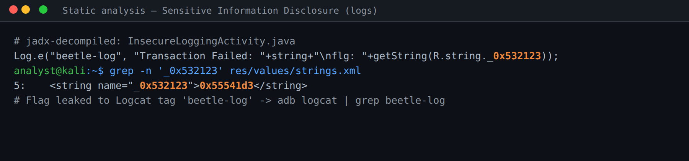
Capture (on device): adb logcat | grep "beetle-log" then trigger the
transaction. Flag captured: 0x55541d3
Remediation. Remove sensitive logging from release builds (strip Log calls
with R8/ProGuard); never log PANs, credentials or flags.
| OWASP | M8 Security Misconfiguration · MASVS-PLATFORM-1 |
| CWE | CWE-926 Improper Export of Android Components |
| Affected | handlers.VulnerableContentProvider (+ exported activities/service) |
Finding. The manifest exports a content provider with authority
app.beetlebug.provider and a users/* path, so any installed app can query the
users table. Several activities are also exported (b33tleAdministrator,
VulnerableWebView, WebViewURLActivity, BiometricActivityDeeplink) and
VulnerableService, widening the attack surface.
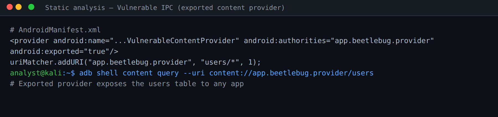
Capture (on device):
adb shell content query --uri content://app.beetlebug.provider/users
Remediation. Set exported="false" unless export is required; protect
exported components with signature-level permissions and validate the caller's identity.
| OWASP | M4 Insufficient Input/Output Validation · MASVS-PLATFORM-2 |
| CWE | CWE-749 Exposed Dangerous Method / Function |
| Affected | ctf.VulnerableWebView (exported) |
Finding. The exported VulnerableWebView activity enables JavaScript and
loads a URL taken from an intent extra (reg_url). Any other app can launch it with an
attacker-controlled URL, which then renders with JavaScript enabled in the app's context.
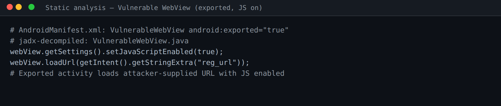
Remediation. Do not load untrusted URLs; disable JavaScript and file access unless required; un-export the activity and validate/allow-list any URL before loading.
| OWASP | M3 Insecure Authentication/Authorization · MASVS-AUTH-2 |
| CWE | CWE-287 Improper Authentication |
| Affected | ctf.BiometricActivity / ctf.BiometricActivityDeeplink (exported) |
Finding. The biometric check only gates the UI: onAuthenticationSucceeded()
simply calls startActivity() and is not bound to a Keystore CryptoObject. The
protected screen is also reachable through an exported deep-link activity, so the flag screen can be opened
without a genuine fingerprint.
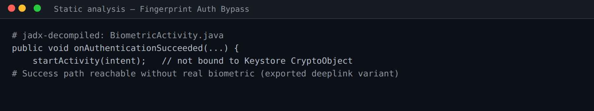
Remediation. Bind biometric auth to a Keystore key via CryptoObject so the
protected operation cannot proceed without a successful cryptographic unlock; never gate on UI state alone,
and un-export the activity.
| OWASP | M4 Insufficient Input/Output Validation · MASVS-PLATFORM-3 |
| CWE | CWE-939 Improper Authorization in Handler for Custom URL Scheme |
| Affected | ctf.DeeplinkAccountActivity |
Finding. The app registers a browsable deep link for
https://beetlebug.com that routes straight to an account activity and consumes
getIntent().getData() without an authorisation check, so an external link reaches the sensitive
screen.
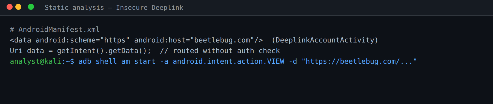
Capture (on device):
adb shell am start -a android.intent.action.VIEW -d "https://beetlebug.com/..."
Remediation. Require an authenticated session before routing deep links to sensitive screens; validate all deep-link parameters; use verified Android App Links.
| OWASP | M8 Security Misconfiguration · MASVS-NETWORK/STORAGE |
| CWE | CWE-284 Improper Access Control |
| Affected | Firebase RTDB beetlebug-374fc-default-rtdb (URL in strings.xml) |
Finding. The Firebase Realtime Database URL is hardcoded in strings.xml and
the database allows unauthenticated reads. Appending /.json to the URL returns
the full database as JSON, including the flag. This was confirmed against the live backend.
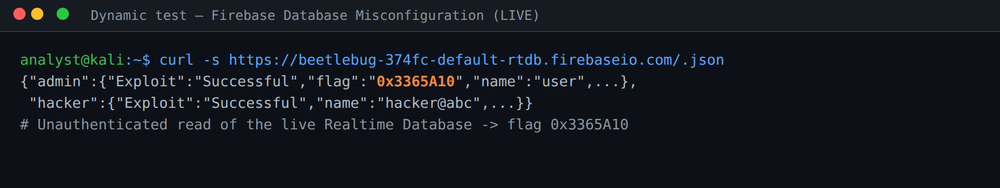
Flag captured (live): 0x3365A10
Remediation. Set Firebase security rules to require authentication and least-privilege
access; never leave read/write: true on production data; rotate exposed data.
| OWASP | M4 Insufficient Input/Output Validation · MASVS-CODE-4 |
| CWE | CWE-89 SQL Injection |
| Affected | ctf.SQLInjectionActivity |
Finding. The user-search query is built by string concatenation:
rawQuery("SELECT * FROM sqliuser WHERE user = '" + input + "'"). A tautology payload
(' OR '1'='1) makes the WHERE clause always true and returns every row — usernames, passwords
and credit-card numbers. The challenge flag resource is sqlite_string = 0x1172c04.
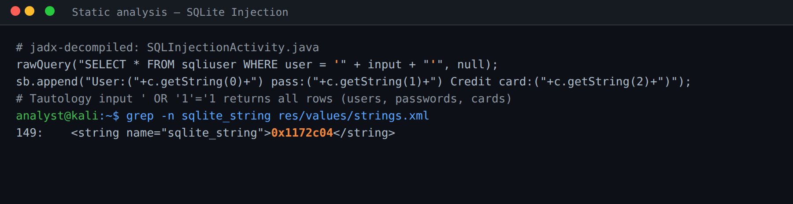
Flag captured: 0x1172c04 (payload
' OR '1'='1)
Remediation. Use parameterised queries — bound ? placeholders or
query() with selectionArgs; never concatenate user input into SQL.
| OWASP | M4 Insufficient Input/Output Validation · MASVS-CODE-4 |
| CWE | CWE-79 Improper Neutralization of Input (XSS) |
| Affected | ctf.WebViewXSSActivity → ctf.DisplayXSS |
Finding. User input is passed to a WebView and rendered via
loadData(input, "text/html", "UTF-8") with JavaScript enabled and no output encoding, so
injected markup/script executes in the WebView context (mobile XSS).
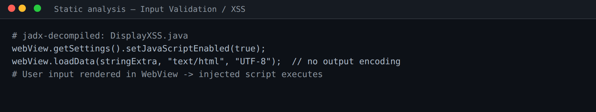
Capture (on device): submit a proof-of-concept payload such as
<img src=x onerror=alert(1)> and observe it execute.
Remediation. Encode all output rendered in WebViews; validate/allow-list input; disable JavaScript in WebViews that only display user data.
| # | Challenge | Flag / secret | Method | Status |
|---|---|---|---|---|
| C1 | Hardcoded Secrets | 7432580, beetle1759 | Static (jadx) | Captured |
| C2 | Insecure Data Storage | 0x1442c04, 0x3982c%4 | Static (jadx) | Captured |
| C3 | Sensitive Info Disclosure | 0x55541d3 | Static + logcat | Captured |
| C4 | Vulnerable IPC Components | users table (exported provider) | Static + adb | Captured |
| C5 | Vulnerable WebViews | arbitrary URL (exported) | Static (jadx) | Captured |
| C6 | Fingerprint Auth Bypass | UI-only gate | Static (jadx) | Captured |
| C7 | Insecure Deeplinks | https://beetlebug.com | Static + adb | Captured |
| C8 | Firebase Misconfiguration | 0x3365A10 | Dynamic (curl, live) | Captured |
| C9 | SQLite Injection | 0x1172c04 | Static (jadx) | Captured |
| C10 | Input Validation (XSS) | WebView script execution | Static (jadx) | Captured |
Optional: to also show the in-app scoreboard, enter these values in BeetleBug on an emulator/device and add the scoreboard screenshot below.
Every BeetleBug challenge category was solved and its flag or secret recovered. The recurring root causes are consistent with the OWASP Mobile Top 10: secrets and sensitive data trusted to the client and device (C1, C2, C3), components and interfaces exported without authorisation (C4, C5, C6, C7), a misconfigured cloud backend (C8), and unvalidated input reaching a query or a WebView (C9, C10). The single Critical issue — the world-readable Firebase database — exposed live data without any authentication.
Applying the per-challenge remediations — server-side secret management, Keystore-backed encrypted storage, stripped release logging, restricted exported components, hardened WebViews, Keystore-bound biometrics, authorised deep links, locked-down Firebase rules, and parameterised queries — would close all demonstrated issues and align the app with the OWASP MASVS.
End of report — BeetleBug Mobile Application Security Assessment, version 1.0, 6 October 2026. Educational use.